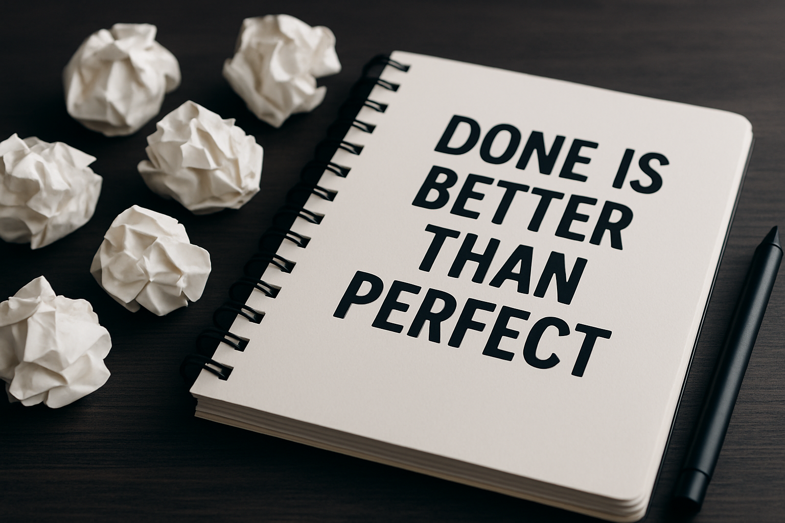

Done Is Better Than Perfect: How to Overcome Creative Blocks.

Perfection is often disguised as excellence. But in reality, it’s one of the greatest enemies of progress, especially for creatives. If you’ve ever stared at a blank screen, sketchpad, camera, or code editor waiting for the “perfect idea” to strike before you start… you’re not lazy or unmotivated. You’re likely battling a creative block powered by perfectionism.
But here’s the truth: Done is better than perfect. Always.
The Trap of Perfection
Perfection tells you that your work must look flawless before it's seen. That you must know everything before you begin. That the outcome must exceed expectations before you even take the first step. And because of this mindset, so many brilliant ideas die unborn. So many creatives hide their work out of fear it won’t be “good enough.” So many projects stay stuck in the drafts.
But here’s what most seasoned creators, designers, writers, and developers know: no project starts perfect. The magic happens after you begin.
Progress Starts With Action
You grow by doing, not by waiting for ideal conditions. That “perfect” video idea? Start recording with what you have. That blog post you're unsure about? Write it anyway. That tech tutorial you're scared won’t be helpful? Publish it. That design you're still tweaking? Ship it.
The first version may not be your best work, and that’s okay. But it will teach you something your thoughts never will. Action brings clarity. Doing brings direction. It’s in the doing that your creativity finds rhythm.
Why Perfectionism Blocks Growth
Creative blocks often aren't because of a lack of ideas. They happen because of overthinking, fear of failure, fear of judgment, and fear of not meeting your own high expectations.
Perfection stalls your momentum. It convinces you that quantity doesn’t matter and only perfect quality matters. But if you study great creatives and entrepreneurs, you'll notice one thing: they published imperfect things, a lot, and got better over time.
They gave themselves permission to grow publicly.
Adopt a Builder’s Mindset
Builders don’t wait for bricks to be flawless, they lay them down one by one and correct as they go. That’s how you should approach your creativity. Make rough sketches. Launch small versions. Put out imperfect content. Share your process. Let your creativity breathe, without trying to choke it with pressure.
Eventually, you’ll look back and realize that what once looked “rough” was the very thing that shaped your style, confidence, and voice.
What to Do When You Feel Blocked
- Set micro-goals: Don’t aim to complete everything at once. Just write 200 words. Just sketch a wireframe. Just brainstorm one idea. Start small.
- Time your creativity: Give yourself a deadline and stick to it, perfection thrives in unlimited time.
- Create messy drafts: Your first version is not the final version. Accept that it will evolve.
- Share before you’re ready: If you wait till it’s “ready,” it may never see the light of day.
- Celebrate execution, not just outcome. You’re winning by finishing, even if it’s not flawless.
You’re Not Your Work
One reason perfection hurts so much is that we attach our identity to our output. If something we create is criticized or ignored, it feels like a personal failure. But your creative work is not your worth. Your progress is not your identity. You are more than what you make, and that means you’re allowed to make imperfect things while becoming your best self.
Conclusion: Let It Go, Just Create
Done is better than perfect. Every time.
The more you start, the better you’ll finish. The more you publish, the more you’ll learn. The more you let go of the pressure to be perfect, the more your creativity will flow with ease and boldness.
Don’t wait for perfection. Press publish. Hit record. Ship it. And keep going.